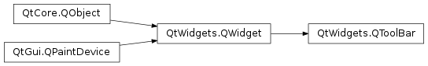

QToolBar¶
Synopsis¶
Functions¶
- def
actionAt(p) - def
actionAt(x, y) - def
actionGeometry(action) - def
addAction(icon, text) - def
addAction(icon, text, receiver) - def
addAction(text) - def
addAction(text, receiver) - def
addSeparator() - def
addWidget(widget) - def
allowedAreas() - def
clear() - def
iconSize() - def
initStyleOption(option) - def
insertSeparator(before) - def
insertWidget(before, widget) - def
isAreaAllowed(area) - def
isFloatable() - def
isFloating() - def
isMovable() - def
orientation() - def
setAllowedAreas(areas) - def
setFloatable(floatable) - def
setMovable(movable) - def
setOrientation(orientation) - def
toggleViewAction() - def
toolButtonStyle() - def
widgetForAction(action)
Slots¶
- def
setIconSize(iconSize) - def
setToolButtonStyle(toolButtonStyle)
Signals¶
- def
actionTriggered(action) - def
allowedAreasChanged(allowedAreas) - def
iconSizeChanged(iconSize) - def
movableChanged(movable) - def
orientationChanged(orientation) - def
toolButtonStyleChanged(toolButtonStyle) - def
topLevelChanged(topLevel) - def
visibilityChanged(visible)
Detailed Description¶
The
PySide2.QtWidgets.QToolBarclass provides a movable panel that contains a set of controls.Toolbar buttons are added by adding actions , using
PySide2.QtWidgets.QToolBar.addAction()orPySide2.QtWidgets.QWidget.insertAction(). Groups of buttons can be separated usingPySide2.QtWidgets.QToolBar.addSeparator()orPySide2.QtWidgets.QToolBar.insertSeparator(). If a toolbar button is not appropriate, a widget can be inserted instead usingPySide2.QtWidgets.QToolBar.addWidget()orPySide2.QtWidgets.QToolBar.insertWidget(). Examples of suitable widgets arePySide2.QtWidgets.QSpinBox,PySide2.QtWidgets.QDoubleSpinBox, andPySide2.QtWidgets.QComboBox. When a toolbar button is pressed, it emits thePySide2.QtWidgets.QToolBar.actionTriggered()signal.A toolbar can be fixed in place in a particular area (e.g., at the top of the window), or it can be movable between toolbar areas; see
PySide2.QtWidgets.QToolBar.setMovable(),PySide2.QtWidgets.QToolBar.isMovable(),PySide2.QtWidgets.QToolBar.allowedAreas()andPySide2.QtWidgets.QToolBar.isAreaAllowed().When a toolbar is resized in such a way that it is too small to show all the items it contains, an extension button will appear as the last item in the toolbar. Pressing the extension button will pop up a menu containing the items that do not currently fit in the toolbar.
When a
PySide2.QtWidgets.QToolBaris not a child of aPySide2.QtWidgets.QMainWindow, it loses the ability to populate the extension pop up with widgets added to the toolbar usingPySide2.QtWidgets.QToolBar.addWidget(). Please use widget actions created by inheritingPySide2.QtWidgets.QWidgetActionand implementingQWidgetAction.createWidget()instead.
-
class
PySide2.QtWidgets.QToolBar([parent=nullptr])¶ -
class
PySide2.QtWidgets.QToolBar(title[, parent=nullptr]) Parameters: - title – unicode
- parent –
PySide2.QtWidgets.QWidget
Constructs a
PySide2.QtWidgets.QToolBarwith the givenparent.Constructs a
PySide2.QtWidgets.QToolBarwith the givenparent.The given window
titleidentifies the toolbar and is shown in the context menu provided byPySide2.QtWidgets.QMainWindow.
-
PySide2.QtWidgets.QToolBar.actionAt(p)¶ Parameters: p – PySide2.QtCore.QPointReturn type: PySide2.QtWidgets.QActionReturns the action at point
p. This function returns zero if no action was found.See also
-
PySide2.QtWidgets.QToolBar.actionAt(x, y) Parameters: - x –
PySide2.QtCore.int - y –
PySide2.QtCore.int
Return type: This is an overloaded function.
Returns the action at the point
x,y. This function returns zero if no action was found.- x –
-
PySide2.QtWidgets.QToolBar.actionGeometry(action)¶ Parameters: action – PySide2.QtWidgets.QActionReturn type: PySide2.QtCore.QRectReturns the geometry of the toolbar item associated with the given
action, or an invalidPySide2.QtCore.QRectif no matching item is found.
-
PySide2.QtWidgets.QToolBar.actionTriggered(action)¶ Parameters: action – PySide2.QtWidgets.QAction
-
PySide2.QtWidgets.QToolBar.addAction(text)¶ Parameters: text – unicode Return type: PySide2.QtWidgets.QActionThis is an overloaded function.
Creates a new action with the given
text. This action is added to the end of the toolbar.
-
PySide2.QtWidgets.QToolBar.addAction(icon, text, receiver) Parameters: - icon –
PySide2.QtGui.QIcon - text – unicode
- receiver –
PySide2.QtCore.QObject
Return type: This is an overloaded function.
Creates a new action with the given
iconandtext. This action is added to the end of the toolbar. The action’sPySide2.Qt3DInput.Qt3DInput::QAction.triggered()signal is connected tomemberinreceiver.- icon –
-
PySide2.QtWidgets.QToolBar.addAction(text, receiver) Parameters: - text – unicode
- receiver –
PySide2.QtCore.QObject
Return type: This is an overloaded function.
Creates a new action with the given
text. This action is added to the end of the toolbar. The action’sPySide2.Qt3DInput.Qt3DInput::QAction.triggered()signal is connected tomemberinreceiver.
-
PySide2.QtWidgets.QToolBar.addAction(icon, text) Parameters: - icon –
PySide2.QtGui.QIcon - text – unicode
Return type: This is an overloaded function.
Creates a new action with the given
iconandtext. This action is added to the end of the toolbar.- icon –
-
PySide2.QtWidgets.QToolBar.addSeparator()¶ Return type: PySide2.QtWidgets.QActionAdds a separator to the end of the toolbar.
-
PySide2.QtWidgets.QToolBar.addWidget(widget)¶ Parameters: widget – PySide2.QtWidgets.QWidgetReturn type: PySide2.QtWidgets.QActionAdds the given
widgetto the toolbar as the toolbar’s last item.The toolbar takes ownership of
widget.If you add a
PySide2.QtWidgets.QToolButtonwith this method, the toolbar’sQt.ToolButtonStylewill not be respected.Note
You should use
QAction.setVisible()to change the visibility of the widget. UsingQWidget.setVisible(),QWidget.show()andQWidget.hide()does not work.
-
PySide2.QtWidgets.QToolBar.allowedAreas()¶ Return type: PySide2.QtCore.Qt.ToolBarAreas
-
PySide2.QtWidgets.QToolBar.allowedAreasChanged(allowedAreas)¶ Parameters: allowedAreas – PySide2.QtCore.Qt.ToolBarAreas
-
PySide2.QtWidgets.QToolBar.clear()¶ Removes all actions from the toolbar.
-
PySide2.QtWidgets.QToolBar.iconSize()¶ Return type: PySide2.QtCore.QSize
-
PySide2.QtWidgets.QToolBar.iconSizeChanged(iconSize)¶ Parameters: iconSize – PySide2.QtCore.QSize
-
PySide2.QtWidgets.QToolBar.initStyleOption(option)¶ Parameters: option – PySide2.QtWidgets.QStyleOptionToolBar
-
PySide2.QtWidgets.QToolBar.insertSeparator(before)¶ Parameters: before – PySide2.QtWidgets.QActionReturn type: PySide2.QtWidgets.QActionInserts a separator into the toolbar in front of the toolbar item associated with the
beforeaction.
-
PySide2.QtWidgets.QToolBar.insertWidget(before, widget)¶ Parameters: - before –
PySide2.QtWidgets.QAction - widget –
PySide2.QtWidgets.QWidget
Return type: Inserts the given
widgetin front of the toolbar item associated with thebeforeaction.Note: You should use
QAction.setVisible()to change the visibility of the widget. UsingQWidget.setVisible(),QWidget.show()andQWidget.hide()does not work.- before –
-
PySide2.QtWidgets.QToolBar.isAreaAllowed(area)¶ Parameters: area – PySide2.QtCore.Qt.ToolBarAreaReturn type: PySide2.QtCore.boolReturns
trueif this toolbar is dockable in the givenarea; otherwise returnsfalse.
-
PySide2.QtWidgets.QToolBar.isFloatable()¶ Return type: PySide2.QtCore.bool
-
PySide2.QtWidgets.QToolBar.isFloating()¶ Return type: PySide2.QtCore.bool
-
PySide2.QtWidgets.QToolBar.isMovable()¶ Return type: PySide2.QtCore.bool
-
PySide2.QtWidgets.QToolBar.movableChanged(movable)¶ Parameters: movable – PySide2.QtCore.bool
-
PySide2.QtWidgets.QToolBar.orientation()¶ Return type: PySide2.QtCore.Qt.Orientation
-
PySide2.QtWidgets.QToolBar.orientationChanged(orientation)¶ Parameters: orientation – PySide2.QtCore.Qt.Orientation
-
PySide2.QtWidgets.QToolBar.setAllowedAreas(areas)¶ Parameters: areas – PySide2.QtCore.Qt.ToolBarAreas
-
PySide2.QtWidgets.QToolBar.setFloatable(floatable)¶ Parameters: floatable – PySide2.QtCore.bool
-
PySide2.QtWidgets.QToolBar.setIconSize(iconSize)¶ Parameters: iconSize – PySide2.QtCore.QSize
-
PySide2.QtWidgets.QToolBar.setMovable(movable)¶ Parameters: movable – PySide2.QtCore.bool
-
PySide2.QtWidgets.QToolBar.setOrientation(orientation)¶ Parameters: orientation – PySide2.QtCore.Qt.Orientation
-
PySide2.QtWidgets.QToolBar.setToolButtonStyle(toolButtonStyle)¶ Parameters: toolButtonStyle – PySide2.QtCore.Qt.ToolButtonStyle
-
PySide2.QtWidgets.QToolBar.toggleViewAction()¶ Return type: PySide2.QtWidgets.QActionReturns a checkable action that can be used to show or hide this toolbar.
The action’s text is set to the toolbar’s window title.
See also
QAction.textQWidget.windowTitle
-
PySide2.QtWidgets.QToolBar.toolButtonStyle()¶ Return type: PySide2.QtCore.Qt.ToolButtonStyle
-
PySide2.QtWidgets.QToolBar.toolButtonStyleChanged(toolButtonStyle)¶ Parameters: toolButtonStyle – PySide2.QtCore.Qt.ToolButtonStyle
-
PySide2.QtWidgets.QToolBar.topLevelChanged(topLevel)¶ Parameters: topLevel – PySide2.QtCore.bool
-
PySide2.QtWidgets.QToolBar.visibilityChanged(visible)¶ Parameters: visible – PySide2.QtCore.bool
-
PySide2.QtWidgets.QToolBar.widgetForAction(action)¶ Parameters: action – PySide2.QtWidgets.QActionReturn type: PySide2.QtWidgets.QWidgetReturns the widget associated with the specified
action.
© 2018 The Qt Company Ltd. Documentation contributions included herein are the copyrights of their respective owners. The documentation provided herein is licensed under the terms of the GNU Free Documentation License version 1.3 as published by the Free Software Foundation. Qt and respective logos are trademarks of The Qt Company Ltd. in Finland and/or other countries worldwide. All other trademarks are property of their respective owners.